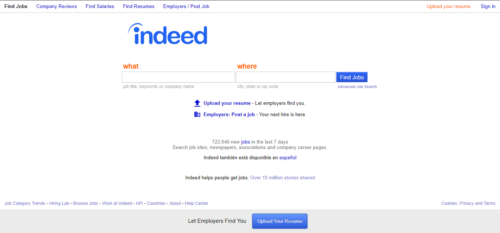
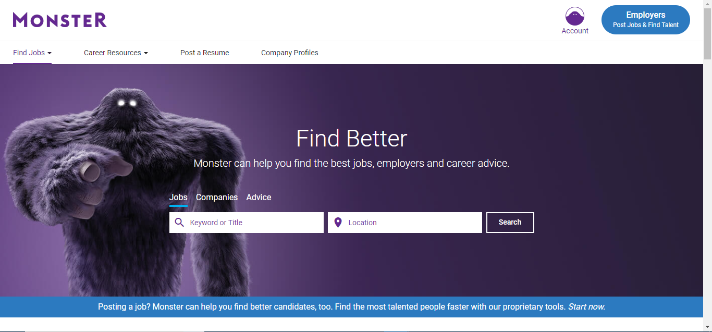
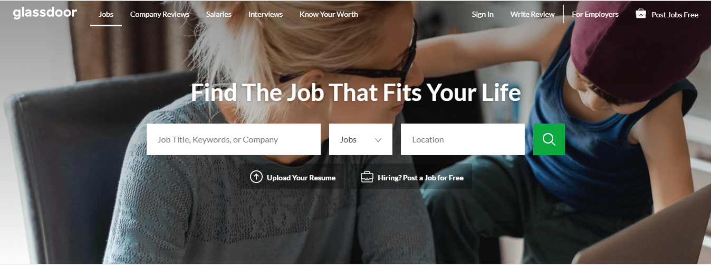
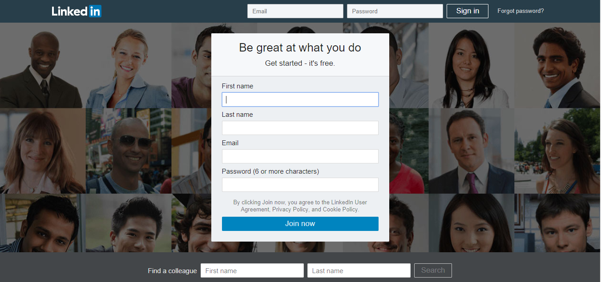
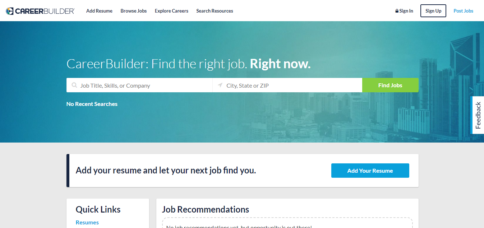

Where is the best place to find a job?
There are thousands of websites that allow you to
find a job. The best ones are ones that allow you to customize
accordingly to your perferences. Know what you are looking for
when searching for a job first, that will make your search a
lot more easier. Things such as wage, salary, and type
of position can help you narrow it down quick. Find a job where
you would enjoy to work, you're better off working for some
place you like then comming to work everyday and hating it.
The sites listed below are great ways to find job listings but sometimes the
best way is to go down to your desired work place and ask to apply there.
You will be able to have a good first impression and be able to show that
you really want and is the right person for that job.
You will find that many different sites have the same listings, this is
because employers try to reach people in as many places as possible, but believe
it or not, they might not be posting on your favorite site. This is why it is
best to search in a few different places. If you know which
company you are intested in, try looking at their own website and search for
their career opportunities.
Find websites that are more closely related to your area and community.

With millions of new job listings posted daily by employers
from over 60 countries,
this makes Indeed the #1 website to find a job. It allows you to be able
to narrow down your search specifically so you are finding the right job.
Like many other growing sites, Indeed also allows you to have the option of
uploading your own resume so that employers can come find you, making you do
less of the work.
You have the option to search online or on the go with their mobile-friendly
webiste and app. If thats not enough
for you, they even have the option for you to get daily job suggestions
that matches your preferences. Indeed should be the first job websites you
check oout on your search.
At Monster's, there are experts that helps you with your career search.
They will critique your resume, give expert advises, interview tips,
icebreaker ideas and best strategies to go through. They also have
educational programs that will help you to be able to market yourself
out more which is a crucial skill to have. You always want to set yourself
apart from others when applying for a job. Monster focus a lot on making sure
its users succeed in finding a job by help them with whats needed. With
millions of job listings provided here too, educating its users is
another important aspect this site.


Glassdoor is known for its reviews and contribution from past or
current employees. You are able to see reviews from those
who has worked there and an estimate of how much you could earn
for each position based on other pays. This is seen to be more trustful
as all reviews and rating are submitted anonymously. Glassdoor also lets
users submit real interview questions from company's and users can give
examples of ways to answer that question professionally. This allows you
to prepare in advanved before that interview happens. Looking at these
anonymous submissions are open
to the public but to sumbit one, you would need to create your free acount.
Glassdoor's job listings that include reviews, questions, and tip from
actual workers of each company is what sets Glassdoor from other job
listing sites.
If you are looking for a more professional job, Linkedin is the right
site for you. Their goal is to connect you with professional and successful
and make you and the employer more successful and productive.
Linkedin allows you to build and maintaining high professionalism
while looking for a job. You can think of it as kind of a social media
for professional people, they match your profile with others who are looking
for your unique qualities. Linkedin is the leading website that networks
people professionally.


CareerBuilder makes it easy and simple to find a job by having less
features but at the same time, being able to match you to many great
jobs. CareerBuilder has partnered up with many leading companies
and local newspaper to get the listings that are more personal to you. CareerBuilder is a
growing job site that makes it really to find the right job for you.